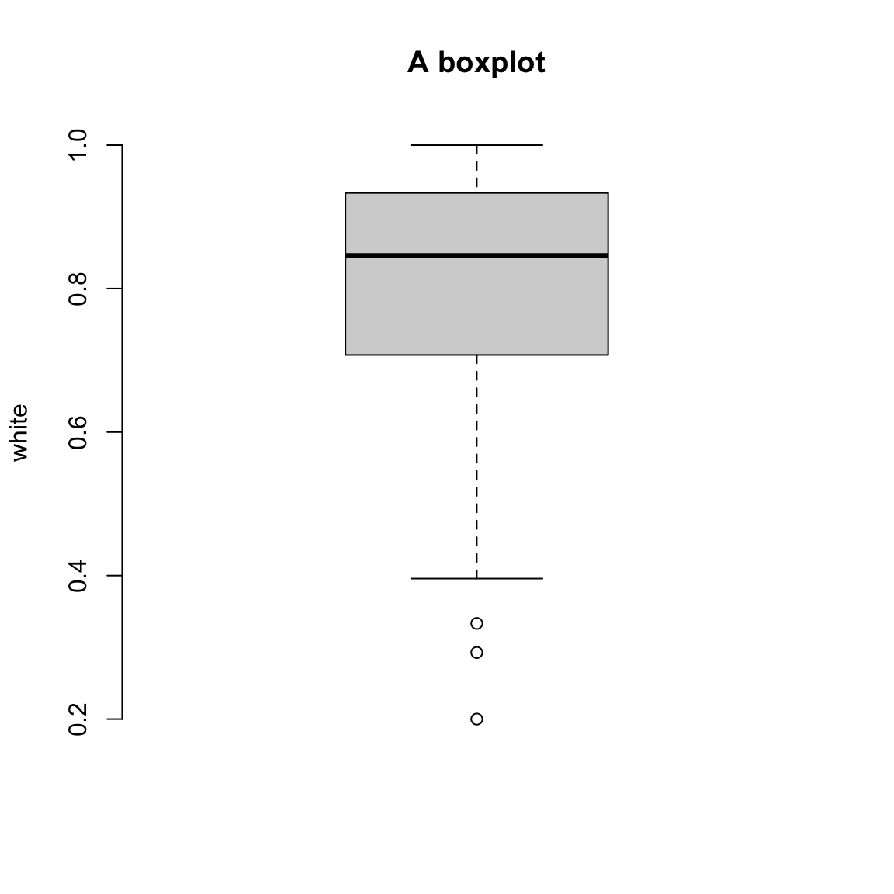
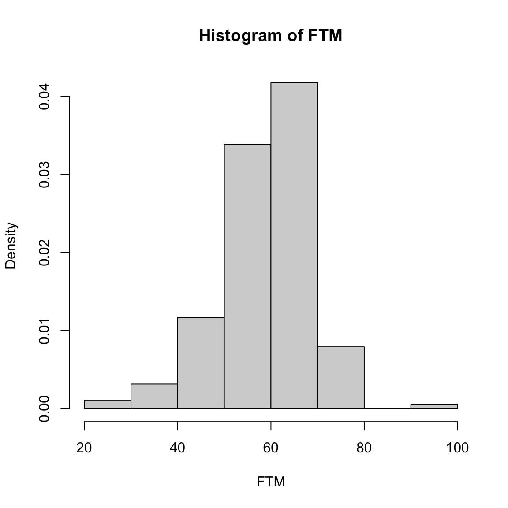
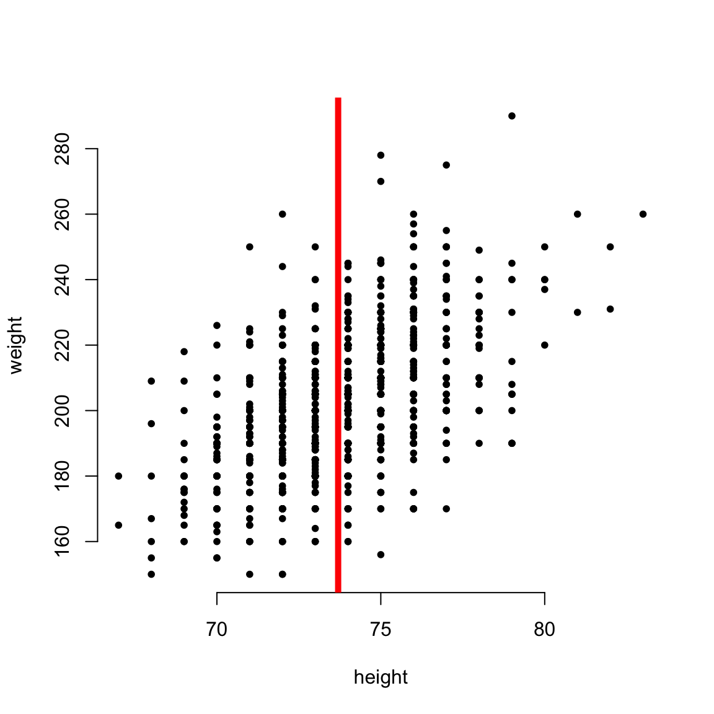
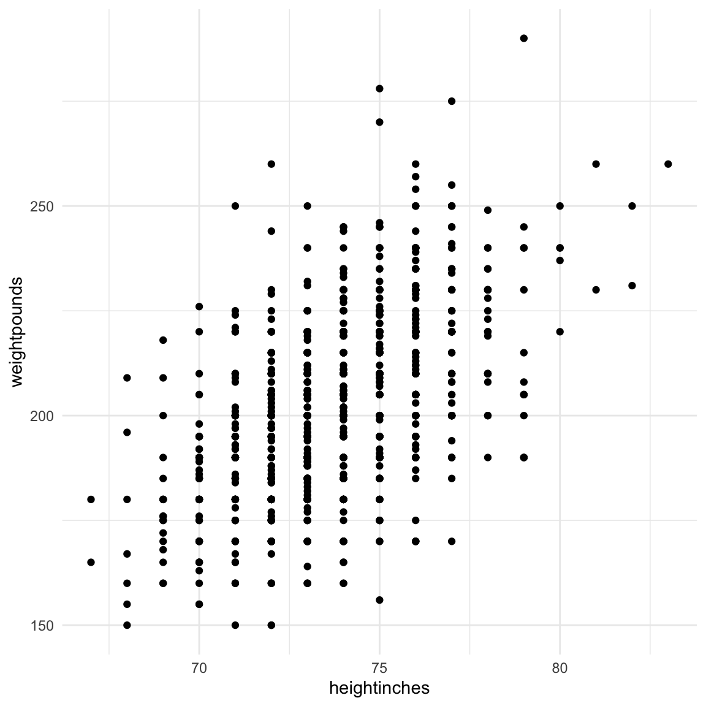

Packages needed
#install.packages(c("dplyr","haven","readr", "tidyr","ggplot2","texreg","stringr","stringi","WDI"))
library(haven) # Import Data
library(readr) # Import Data
library(dplyr) # Data manipulation
library(ggplot2) # Creating graphics
library(stringr) # Deal with string data
library(kableExtra) # Build complex tables and manipulate table styles
library(WDI) # Get data from the World Bank's API
library(psych) # We use the describe() function from this package for summary statistics.
library(texreg) # Convert regression output to Table
library(stargazer) # Convert regression output to Table
library(equatiomatic) # Provide an automatic way to show the equations of models fitted in R.Basic R
R Data Type
What are the main types of data we will deal with?
They can be:
1. Number
0
1.5
3/4- String or Character:
"Hello world"Category:
We will talk about this in a bit.
Logical: (MUST use uppercase):
TRUE
FALSE
Or we can use T and F.
Special Cases
NA: missing data - the most important for today’s purposes
NaN: not a number - will only happen if something has gone wrong!
NULL: basically an undefined value - there’s nothing there (not even missing data!)
Creating and assigning objects
- Everything that exits in R is an object.
Data types can be contained in R objects. By creating an object, we save the information to our working environment so that we can recall it whenever we want by just running the name of the object.
In RStudio we make vast use of the <- operator to assign
values to objects. We can obtain the operator quickly by typing the
“alt” + “-” keys together.
a <- 2The above code assigns the value of ‘2’ to an object called a.
Notice that a is now in our global environment in the top-right
part of RStudio (unless you’ve changed your settings).
We can access the contents of a by running it as code:
a## [1] 2Normally, we could give the self-explanatory names to the objects:
my_string <- c("hello","world","today","is","amazing")Logical Operators
Equal
== asks whether two values are the same or equal
a == my_string## [1] FALSE FALSE FALSE FALSE FALSENot Equal
!= asks whether two values are not the same or
equal.
a != my_string## [1] TRUE TRUE TRUE TRUE TRUEGreater or Smaller
We can also test whether certain values are:
>greater than;<smaller than;>=greater or equals<=smaller or equals
Combine Logical Operators
&stands for “and” (not very surprising)|stands for “or”
Functions
You may have noticed that so far we’ve seen the following math
operators: * / + -
^ (multiplication, division, addition, subtraction,
exponentiation). But how do we get the square root of something?
We use the sqrt() function:
sqrt(4)## [1] 2The real power of R is in its functions. Both base R and many packages (we’ll get onto these in a bit) have many useful functions for us to use. The trick of course is in learning how to understand and find functions. The best place to begin (if you know a function’s name) is by putting a question mark before it, dropping the parentheses and running it:
?sqrtAs you can see, this opens the function’s documentation in the help panel in the bottom-right of RStudio. These documents can be a little daunting sometimes, but you’ll get used to them. The most important parts are:
Usage - this shows us what order the arguments are in and what defaults if there are any.
Arguments - these tell us what *inputs* the function is expecting
Value - this tells us what *output* we expect from the function - note that sqrt()’s documentation doesn’t have the value header but DOES describe the output under details
Many documentations also include examples at the bottom.
That may have been a lot - let’s look at another example:
?logNotice for log() we have TWO arguments. The first is our input (x), the second is the base of the logarithm. Notice that the default is that we use the natural logarithm. If there is a default argument, R will use this UNLESS you overwrite it!
To take the base 10 logarithm of the number 2:
log(2, 10)## [1] 0.30103Notice that we don’t need to explicitly name arguments. If we don’t name our arguments, R will assume that we’re giving them in the order listed in the ‘usage’ section of the documentation. Notice also that we can ‘chain’ functions together:
log(sqrt(4), 10) # gives exactly the same as log(2, 10) above as sqrt(4) = 2## [1] 0.30103The evaluation order for R is inside to outside. In other words, R will evaluate the function on the inside first, and the one on the outside second. If you don’t know the name of a function or want to find one, google is your best friend. A big chunk of getting good at R is going to be getting good at finding what you need via google.
For example, to find the exponential function.
Let’s try one more before we move on:
?paste
paste("This", "is", "a", "full", "sentence")## [1] "This is a full sentence"Notice the “…” in the arguments. This means we can give it as many inputs as we want, BUT we’ll need to explicity name any further arguments:
paste("This", "is", "a", "full", "sentence", sep="-")## [1] "This-is-a-full-sentence"Data Structures
There are many types of objects in R. Today we focus our attention
on:
1) Vectors
2) Matrices (2-dimensional vectors)
3) Data Frames
4) Lists
Vectors
Vectors are one-dimensional objects that can have different lengths and can contain different values, but all of the same nature (all numeric, all characters, all logical…)
my.first.vector <- c(1, 5, 2, 6, 8, 9, 12, 2.4, 0.3, -2.56, 3/4, 2+3)
# the c() function stands for "concatenate" and is used to join objects together
my.first.vector## [1] 1.00 5.00 2.00 6.00 8.00 9.00 12.00 2.40 0.30 -2.56 0.75 5.00How long is my vector?
length(my.first.vector)## [1] 12You can access the value of a specific element in your vector using squared brackets:
my.first.vector[8] # the value of the eighth element in our vector## [1] 2.4my.first.vector[1] # the value of the first element in our vector## [1] 1We can also store string elements in our vector:
a.string.vector <- c("here", "are", "some", "elements")
a.string.vector## [1] "here" "are" "some" "elements"What data type is in the vector?
class(my.first.vector)## [1] "numeric"class(a.string.vector)## [1] "character"Again, paste() is a useful function to use with strings:
c <- "hello"
d <- "world"
paste(c, d, sep = "")## [1] "helloworld"c(c, d)## [1] "hello" "world"paste(c, d, sep = ",") # specifies the separator of the two objects!## [1] "hello,world"paste0() is a similar function,which by default puts no separator:
paste0(c, d)## [1] "helloworld"Our vector can be a vector of factors. This is used to create categorical variables.
Matrix
A matrix is a two-dimensional vector. Besides being two-dimensional,
the same rules of vectors apply to matrix: a matrix can only contain
data of the same type.
Suppose we want a 3x4 matrix with numbers from 1 to 12 in its cells:
m <- matrix(data = 1:12, # the data in our matrix. Pick all integers from 1 to 12 (included)
nrow = 3, # the number of rows
ncol = 4, # the number of columns
byrow = TRUE) # do we want data to be stored in cells by row or by column?
m## [,1] [,2] [,3] [,4]
## [1,] 1 2 3 4
## [2,] 5 6 7 8
## [3,] 9 10 11 12We can access an individual element of a matrix in R by specifying its position.
m[2,4] # the object in the 2nd row, 4th column## [1] 8m[,1] # all the first column## [1] 1 5 9m[1,] # all the first row## [1] 1 2 3 4We can also give names to columns and rows.
colnames(m) <- c("one", "two", "three", "four")
rownames(m) <- c("a", "b", "c")
m## one two three four
## a 1 2 3 4
## b 5 6 7 8
## c 9 10 11 12I won’t be showing you matrix algebra in action during this class (you’re unlikely to need it outside of introductory exercises and advanced programming). But to summarise the available functions:
- \(+\) matrix addition
- \(*\) multiplication by a scalar
- \(%*%\) matrix multiplication
- t( ) transpose
- solve( ) inverse
- diag( ) get the diagonal
Data Frame
They are perhaps the most common object we will deal with in R. Most databases are imported automatically as data frames. They have multiple variables organized in columns, and each row represents one observation.
Before importing one, let’s create one from scratch and see how it looks like.
datafr <- data.frame(
var1 = c(rep("a", 3), rep("b", 4), rep("c", 2), "d"),
var2 = rnorm(n = 10, mean = 0, sd = 1.3), # here we are drawing 10 random values from a
# normal distribution with mean = 0 and sd = 1.3
var3 = c(1, -4, 2, 4.2, 5.3333, 1/9, 7.5, 0.000, 1-12, sqrt(2)) # notice that here we are
# creating a vector where the elements are expressions! We also include the squared root of 2
)
datafr## var1 var2 var3
## 1 a -1.01232121 1.0000000
## 2 a -0.04761299 -4.0000000
## 3 a 1.20558205 2.0000000
## 4 b 1.26396546 4.2000000
## 5 b -0.65507976 5.3333000
## 6 b 0.52927069 0.1111111
## 7 b -0.61224097 7.5000000
## 8 c 0.94587598 0.0000000
## 9 c 1.66394135 -11.0000000
## 10 d -0.79557489 1.4142136Each variable within our data frame is a vector, and the rules of vectors apply to them. All variables in a data frame must have the same length. But we might have variables with missing values. In R these missing values are called NA:
df <- data.frame(var1 = c(rep("a", 3), rep("b", 4), rep("c", 2), "d"),
var2 = c(1,2,3,4,5,NA,7,8,9,10))
df # we have a missing value in var2## var1 var2
## 1 a 1
## 2 a 2
## 3 a 3
## 4 b 4
## 5 b 5
## 6 b NA
## 7 b 7
## 8 c 8
## 9 c 9
## 10 d 10class(datafr)## [1] "data.frame"We can assess information in one column of our data frame using $ operator:
datafr$var1 # this gives us precisely the object we want.## [1] "a" "a" "a" "b" "b" "b" "b" "c" "c" "d"datafr$var3## [1] 1.0000000 -4.0000000 2.0000000 4.2000000 5.3333000 0.1111111
## [7] 7.5000000 0.0000000 -11.0000000 1.4142136datafr$var2## [1] -1.01232121 -0.04761299 1.20558205 1.26396546 -0.65507976 0.52927069
## [7] -0.61224097 0.94587598 1.66394135 -0.79557489df$var2## [1] 1 2 3 4 5 NA 7 8 9 10class(datafr)## [1] "data.frame"class(datafr$var1)## [1] "character"class(datafr$var2)## [1] "numeric"class(datafr$var3)## [1] "numeric"List
Lists are the last object type that we briefly introduce today. Lists are objects that include different other objects in R, of whatever type. A list can even contain another list.
ls <- list(df, datafr, datafr$var2)
ls## [[1]]
## var1 var2
## 1 a 1
## 2 a 2
## 3 a 3
## 4 b 4
## 5 b 5
## 6 b NA
## 7 b 7
## 8 c 8
## 9 c 9
## 10 d 10
##
## [[2]]
## var1 var2 var3
## 1 a -1.01232121 1.0000000
## 2 a -0.04761299 -4.0000000
## 3 a 1.20558205 2.0000000
## 4 b 1.26396546 4.2000000
## 5 b -0.65507976 5.3333000
## 6 b 0.52927069 0.1111111
## 7 b -0.61224097 7.5000000
## 8 c 0.94587598 0.0000000
## 9 c 1.66394135 -11.0000000
## 10 d -0.79557489 1.4142136
##
## [[3]]
## [1] -1.01232121 -0.04761299 1.20558205 1.26396546 -0.65507976 0.52927069
## [7] -0.61224097 0.94587598 1.66394135 -0.79557489ls2 <- list(df, ls)
ls2## [[1]]
## var1 var2
## 1 a 1
## 2 a 2
## 3 a 3
## 4 b 4
## 5 b 5
## 6 b NA
## 7 b 7
## 8 c 8
## 9 c 9
## 10 d 10
##
## [[2]]
## [[2]][[1]]
## var1 var2
## 1 a 1
## 2 a 2
## 3 a 3
## 4 b 4
## 5 b 5
## 6 b NA
## 7 b 7
## 8 c 8
## 9 c 9
## 10 d 10
##
## [[2]][[2]]
## var1 var2 var3
## 1 a -1.01232121 1.0000000
## 2 a -0.04761299 -4.0000000
## 3 a 1.20558205 2.0000000
## 4 b 1.26396546 4.2000000
## 5 b -0.65507976 5.3333000
## 6 b 0.52927069 0.1111111
## 7 b -0.61224097 7.5000000
## 8 c 0.94587598 0.0000000
## 9 c 1.66394135 -11.0000000
## 10 d -0.79557489 1.4142136
##
## [[2]][[3]]
## [1] -1.01232121 -0.04761299 1.20558205 1.26396546 -0.65507976 0.52927069
## [7] -0.61224097 0.94587598 1.66394135 -0.79557489There are many functions that allow you to try to coerce the nature
of an object:
- as.numeric() tries to coerce its argument into a numeric.
- as.integer() tries to coerce its argument into an integer.
- as.character() tries to coerce its argument into a character.
- as.factor() tries to coerce its argument into a factor.
And also its class! - as.matrix() - as.data.frame() - as.array() - as.list()
Import and Manage Datasets
Import Datasets
Now, we will learn how to import different types of databases from outside. First, let’s clean our enviornment before dealing with databases.
rm(list = ls())Or by clicking on session -> clear workspace -> yes.
If you do it by code, make sure to keep that line at the
top of your script. It’s really important that you start fresh
each time you do work in R, to make sure that your workflow (the order
you do things) is replicable. In other words, it helps make sure that
your future self or someone else can open up your script,run everything,
and get the same result every time.
Then, we must set up our working directory, the folder on our
computer where we are going to work from, where we store our data and
where perhaps we might want to save our plots or the outputs from the
analysis.
In R, we do it using the setwd() function:
setwd("~/Desktop/ESS_3x_website")Now import data from a csv file and save it in a named object.
The choice across various functions of importing data depends on the data type, e.g. .dta, .csv, or .xlsx.
ANES <- read_dta("anesByState.dta")
head(ANES)## # A tibble: 6 x 8
## year state FTM white poor turnout voteDem dem
## <dbl> <dbl+lbl> <dbl> <dbl> <dbl> <dbl> <dbl> <dbl>
## 1 1984 4 [NH] 73.6 1 0.118 1.81 0.231 0.205
## 2 1986 4 [NH] 76.7 0.944 0.154 1.44 0 0.333
## 3 1988 4 [NH] 66.3 0.935 0.0667 1.76 0.161 0.194
## 4 1990 4 [NH] 72.6 0.959 0.0476 1.49 0 0.184
## 5 1992 4 [NH] 50.6 0.914 0.0909 1.83 0.278 0.25
## 6 1994 4 [NH] 52.7 1 0.286 1.60 0 0.133csvfile <- "https://raw.githubusercontent.com/lorenzo-crippa/Intro_to_R/master/2021/baseball.csv"
baseball <- read.csv(csvfile)
head(baseball)## X name team heightinches weightpounds
## 1 1 Adam_Donachie BAL 74 180
## 2 2 Paul_Bako BAL 74 215
## 3 3 Ramon_Hernandez BAL 72 210
## 4 4 Kevin_Millar BAL 72 210
## 5 5 Chris_Gomez BAL 73 188
## 6 6 Brian_Roberts BAL 69 176Yes! We could import a data file from a URL:
url <- "http://www.principlesofeconometrics.com/stata/broiler.dta"
data.df <- read_dta(url)
head(data.df)## # A tibble: 6 x 12
## year q y pchick pbeef pcor pf cpi qproda pop meatex time
## <dbl> <dbl> <dbl> <dbl> <dbl> <dbl> <dbl> <dbl> <dbl> <dbl> <dbl> <dbl>
## 1 1950 14.3 7863 69.5 31.2 59.8 NA 24.1 2628500 152. NA 41
## 2 1951 15.1 7953 72.9 36.5 72.1 NA 26 2843000 154. NA 42
## 3 1952 15.3 8071 73.1 36.2 71.3 NA 26.5 2851200 157. NA 43
## 4 1953 15.2 8319 71.3 28.5 62.7 NA 26.7 2953900 160. NA 44
## 5 1954 15.8 8276 64.4 27.4 63.4 NA 26.9 3099700 162. NA 45
## 6 1955 14.7 8675 67 27.1 56.1 NA 26.8 2958100 165. NA 46In addition, although we won’t get into the details of this method, some packages allow users to search and download data, e.g. WDI, V-Dem, democracyData. Here is an example of importing World Bank Data automatically.
wdi_data <- WDI(country = "all",
indicator = c(population = "SP.POP.TOTL",
gdp_percapita = "NY.GDP.PCAP.KD"),
start = 2000, end = 2020, extra = TRUE)
head(wdi_data)## iso2c country year population gdp_percapita iso3c region capital
## 1 1A Arab World 2005 314965776 5532.099 ARB Aggregates
## 2 1A Arab World 2004 307862846 5363.638 ARB Aggregates
## 3 1A Arab World 2017 411942825 6386.722 ARB Aggregates
## 4 1A Arab World 2016 404042892 6431.676 ARB Aggregates
## 5 1A Arab World 2008 338395936 6029.585 ARB Aggregates
## 6 1A Arab World 2006 322452764 5732.229 ARB Aggregates
## longitude latitude income lending
## 1 Aggregates Aggregates
## 2 Aggregates Aggregates
## 3 Aggregates Aggregates
## 4 Aggregates Aggregates
## 5 Aggregates Aggregates
## 6 Aggregates AggregatesHere is the common data types, and the corresponding functions and packages.
| Data Type | Function | Package |
|---|---|---|
| .dta | read_dta | haven |
| read.dta | foreign | |
| .csv | read_csv | readr |
| read.csv | ||
| .xls | read_excel | readxl |
| .xlsx | read_excek | readxl |
| .txt | read.delim |
Manage datasets
Database management like dropping observations and variables,sorting the data and the other, can be done using the basic R language.
However, a suite of packages has also been developed to write code in R in much more natural syntax. The suite is called tidyverse. We can install it by running:
#install.packages("tidyverse")
library(tidyverse)## ── Attaching packages ─────────────────────────────────────── tidyverse 1.3.1 ──## ✓ tibble 3.1.2 ✓ purrr 0.3.4
## ✓ tidyr 1.1.3 ✓ forcats 0.5.1## ── Conflicts ────────────────────────────────────────── tidyverse_conflicts() ──
## x psych::%+%() masks ggplot2::%+%()
## x psych::alpha() masks ggplot2::alpha()
## x tidyr::extract() masks texreg::extract()
## x dplyr::filter() masks stats::filter()
## x kableExtra::group_rows() masks dplyr::group_rows()
## x dplyr::lag() masks stats::lag()In what follows, you’ll see code for managing datasets in base R,and next you’ll see the (more intuitive) tidyverse version of the same operations. It’s important to know both.
Suppose now we want to drop from our baseball data all observations that refer to the CLE team (no offense to its fans). Doing it in base R would be:
baseball.no.CLE <- baseball[baseball$team != "CLE", ]Suppose now we want to get rid of all observations that are not for New York Yankees (NYY) and also we want to drop the column “name”. Yet, we don’t want to overwrite the “baseball” object because we might need the information we’re dropping later. We can do the following:
baseball.2 <- baseball[baseball$team == "NYY", 2:4]These operations are made smoother by tidverse Let’s do something similar on ANES. Let’s remove all observations from the year 2000, then remove the variable turnout:
ANES <- filter(ANES, # what is your data frame?
year != 2000) # the condition you impose
ANES <- select(ANES,
-turnout) # keep everything BUT the variable named "turnout"Now suppose we want to sort observations in our ANES dataset based on state, then year.We can do it by:
ANES[order(ANES[,2], ANES[,1]),]## # A tibble: 249 x 7
## year state FTM white poor voteDem dem
## <dbl> <dbl+lbl> <dbl> <dbl> <dbl> <dbl> <dbl>
## 1 1984 4 [NH] 73.6 1 0.118 0.231 0.205
## 2 1986 4 [NH] 76.7 0.944 0.154 0 0.333
## 3 1988 4 [NH] 66.3 0.935 0.0667 0.161 0.194
## 4 1990 4 [NH] 72.6 0.959 0.0476 0 0.184
## 5 1992 4 [NH] 50.6 0.914 0.0909 0.278 0.25
## 6 1994 4 [NH] 52.7 1 0.286 0 0.133
## 7 1996 4 [NH] 56.9 1 0.176 0.278 0.167
## 8 1998 4 [NH] 41.8 1 0.0833 0 0.25
## 9 2002 4 [NH] 72.6 0.923 0 0 0.0769
## 10 2004 4 [NH] 51.6 0.917 0.167 0.308 0.308
## # … with 239 more rowsBy doing this we have taken ANES and we have asked R to reorder its rows first based on the second column (state), then by its first column (year). Notice that this time we have not saved the data frame obtained into an object!
Another useful function is unique(). It tells us what values a vector takes:
unique(ANES$year) # all possible years in the ANES dataset## [1] 1984 1986 1988 1990 1992 1994 1996 1998 2002 2004 1952 1956 1958 1960 1962
## [16] 1964 1966 1968 1970 1972 1974 1976 1978 1980 1982 2008# we might want to have it sorted:
sort(unique(ANES$year)) # years from 1952 to 2008 by 2-year distance. ## [1] 1952 1956 1958 1960 1962 1964 1966 1968 1970 1972 1974 1976 1978 1980 1982
## [16] 1984 1986 1988 1990 1992 1994 1996 1998 2002 2004 2008We can also add variables to our data frames. What if we wanted to add the squared valueof “poor” in the ANES data frame? In base R this is done by doing:
ANES$new.var <- ANES$poor^2
# we can also do it in tidyverse by doing:
ANES <- mutate(ANES,
new.var2 = poor*2)ifelse() is a function that is very useful to know. If its “test” argument (a condition) is verified, it does what the “yes” argument says. Otherwise, it executes the “no” argument. For instance, in ANES we might want to have a variable that takes value 0, if the year is before 2000, and 1 otherwise. We can do it like this:
ANES$indicator <- ifelse(test = ANES$year >= 2000, yes = 1, no = 0)
unique(ANES$indicator)## [1] 0 1Get Summary Stats and Plots
Summary Statistics
When we first obtain a data object in R, there are several things that we could do:
names(ANES) # obtain all the variable names of a dataset## [1] "year" "state" "FTM" "white" "poor" "voteDem"
## [7] "dem" "new.var" "new.var2" "indicator"head(ANES) ## # A tibble: 6 x 10
## year state FTM white poor voteDem dem new.var new.var2 indicator
## <dbl> <dbl+lbl> <dbl> <dbl> <dbl> <dbl> <dbl> <dbl> <dbl> <dbl>
## 1 1984 4 [NH] 73.6 1 0.118 0.231 0.205 0.0138 0.235 0
## 2 1986 4 [NH] 76.7 0.944 0.154 0 0.333 0.0237 0.308 0
## 3 1988 4 [NH] 66.3 0.935 0.0667 0.161 0.194 0.00444 0.133 0
## 4 1990 4 [NH] 72.6 0.959 0.0476 0 0.184 0.00227 0.0952 0
## 5 1992 4 [NH] 50.6 0.914 0.0909 0.278 0.25 0.00826 0.182 0
## 6 1994 4 [NH] 52.7 1 0.286 0 0.133 0.0816 0.571 0glimpse(ANES) # get a glimpse of your data.## Rows: 249
## Columns: 10
## $ year <dbl> 1984, 1986, 1988, 1990, 1992, 1994, 1996, 1998, 2002, 2004, …
## $ state <dbl+lbl> 4, 4, 4, 4, 4, 4, 4, 4, 4, 4, 13, 13, 13, 13, …
## $ FTM <dbl> 73.61539, 76.73333, 66.31035, 72.63265, 50.61111, 52.66667, …
## $ white <dbl> 1.0000000, 0.9444444, 0.9354839, 0.9591837, 0.9142857, 1.000…
## $ poor <dbl> 0.11764706, 0.15384616, 0.06666667, 0.04761905, 0.09090909, …
## $ voteDem <dbl> 0.2307692, 0.0000000, 0.1612903, 0.0000000, 0.2777778, 0.000…
## $ dem <dbl> 0.20512821, 0.33333334, 0.19354838, 0.18367347, 0.25000000, …
## $ new.var <dbl> 0.013840831, 0.023668641, 0.004444445, 0.002267574, 0.008264…
## $ new.var2 <dbl> 0.2352941, 0.3076923, 0.1333333, 0.0952381, 0.1818182, 0.571…
## $ indicator <dbl> 0, 0, 0, 0, 0, 0, 0, 0, 1, 1, 0, 0, 0, 0, 0, 0, 0, 0, 0, 0, …If we want to get some description of our data.
summary(ANES$poor)## Min. 1st Qu. Median Mean 3rd Qu. Max.
## 0.0000 0.1093 0.1667 0.1825 0.2297 0.6923We can also ask for specific information:
mean(ANES$voteDem) ## [1] 0.1580367sd(ANES$poor)## [1] 0.1167872median(ANES$dem)## [1] 0.3415638min(ANES$year)## [1] 1952max(ANES$voteDem)## [1] 0.6666667quantile(ANES$poor, 0.3) # the observation that leaves 30% of the observations to its left## 30%
## 0.1275826quantile(ANES$poor, 0.5) # this will be the median of course!## 50%
## 0.1666667median(ANES$poor)## [1] 0.1666667var(ANES$dem) # the variance## [1] 0.03924865table(ANES$year) # how often does each occurrence appear?##
## 1952 1956 1958 1960 1962 1964 1966 1968 1970 1972 1974 1976 1978 1980 1982 1984
## 9 8 8 8 9 9 9 9 9 10 10 10 10 10 10 10
## 1986 1988 1990 1992 1994 1996 1998 2002 2004 2008
## 10 10 10 10 10 11 9 12 9 10range(ANES$year)## [1] 1952 2008Basic plots
We now want to obtain some plots about our data. We will see how to:
obtain boxplots
obtain histograms
obtain density plots
obtain twoway plots
Boxplots
To create a boxplot:
boxplot(ANES$white)
# we can then intervene on options and modify its appearance:
boxplot(ANES$white, frame = F, ylab = "white", main = "A boxplot")
?boxplotWe could also:
# this would be the tidyverse way of doing it:
ggplot(ANES, aes(y = white)) +
geom_boxplot() +
theme_minimal()
Histograms
Plotting a histogram is also easy and similar to create a boxplot:
hist(ANES$FTM, main = "Histogram of FTM", xlab = "FTM")
# and we can also intervene in the plot with options:
hist(ANES$FTM, main = "Histogram of FTM", xlab = "FTM", probability = TRUE) # to have probabilities
Again, in tidyverse:
ggplot(ANES, aes(x = FTM)) +
geom_histogram(binwidth = 5) +
theme_minimal()## Warning: Removed 60 rows containing non-finite values (stat_bin).
Density Plots
We can also obtain kernel densities of our data:
density(ANES$dem)##
## Call:
## density.default(x = ANES$dem)
##
## Data: ANES$dem (249 obs.); Bandwidth 'bw' = 0.05914
##
## x y
## Min. :-0.17743 Min. :0.0003078
## 1st Qu.: 0.09549 1st Qu.:0.1572875
## Median : 0.36842 Median :0.6873645
## Mean : 0.36842 Mean :0.9147635
## 3rd Qu.: 0.64135 3rd Qu.:1.5971476
## Max. : 0.91428 Max. :2.5217948plot(density(ANES$dem))
Twoway Plots
Suppose now we want to explore two-way relations in our data. For instance the two-way relation between height and weight of baseball players:
plot(x = baseball$heightinches, y = baseball$weightpounds,
frame.plot = FALSE, xlab = "height", ylab = "weight",
pch = 20) # pch is an option that selects the shape of dots we want
# what if we want to add lines on this plot? We use the abline() function
# Maybe we want to plot a line corresponding to the mean height
# lwd makes it thicker
abline(v = mean(baseball$heightinches, na.rm = TRUE), col = "red", lwd = 5) 
Again, tidyverse makes things much easier. Let’s re-do all the steps we did before. First, we created a scatter plot. This time, let’s save the plot in an object:
my.plot <- ggplot(baseball, aes(x = heightinches, y = weightpounds)) +
geom_point() +
theme_minimal()
my.plot
tidyverse makes it also simpler to save tidyverse plots:
ggsave(my.plot, filename = "my_first_ggplot.pdf")## Saving 8 x 5 in imageRun Basic Statistical Analyses
T-Tests
Suppose we would like to run a test to see if the population mean of a random variable is distinguishable from 0 based on the data:
t.test(ANES$poor) # by defaul it's a two-tailed t-test with null-value = 0##
## One Sample t-test
##
## data: ANES$poor
## t = 24.661, df = 248, p-value < 2.2e-16
## alternative hypothesis: true mean is not equal to 0
## 95 percent confidence interval:
## 0.1679421 0.1970962
## sample estimates:
## mean of x
## 0.1825192Or you can also test if the true value is equal to other values:
t.test(ANES$FTM, mu = 60)##
## One Sample t-test
##
## data: ANES$FTM
## t = -1.7905, df = 188, p-value = 0.07498
## alternative hypothesis: true mean is not equal to 60
## 95 percent confidence interval:
## 57.44561 60.12363
## sample estimates:
## mean of x
## 58.78462# ...and you can ask the test be one-sided:
t.test(ANES$FTM, mu = 60, alternative = "less")##
## One Sample t-test
##
## data: ANES$FTM
## t = -1.7905, df = 188, p-value = 0.03749
## alternative hypothesis: true mean is less than 60
## 95 percent confidence interval:
## -Inf 59.90665
## sample estimates:
## mean of x
## 58.78462t.test(ANES$FTM, mu = 60, alternative = "greater")##
## One Sample t-test
##
## data: ANES$FTM
## t = -1.7905, df = 188, p-value = 0.9625
## alternative hypothesis: true mean is greater than 60
## 95 percent confidence interval:
## 57.66259 Inf
## sample estimates:
## mean of x
## 58.78462We could also run difference-in-means tests. Suppose you want to test if the mean height of players in the NYY team is different from the mean height of players in the MIN team:
t.test(x = baseball$heightinches[baseball$team == "NYY"],
y = baseball$heightinches[baseball$team == "MIN"])##
## Welch Two Sample t-test
##
## data: baseball$heightinches[baseball$team == "NYY"] and baseball$heightinches[baseball$team == "MIN"]
## t = 2.3469, df = 63, p-value = 0.02209
## alternative hypothesis: true difference in means is not equal to 0
## 95 percent confidence interval:
## 0.1860759 2.3196059
## sample estimates:
## mean of x mean of y
## 74.34375 73.09091YES, THEY ARE. Players in the Yankees are taller on average.
Statistical models
Linear Models
Now, we want to estimate a linear model using OLS. To do that, we first import a dataset from an article by David Card (1993) on NBER:
card <- read_dta("Card_data.dta")
head(card)## # A tibble: 6 x 17
## id nearc2 nearc4 educ age fatheduc motheduc weight black smsa south
## <dbl> <dbl> <dbl> <dbl> <dbl> <dbl> <dbl> <dbl> <dbl> <dbl> <dbl>
## 1 2 0 0 7 29 NA NA 158413 1 1 0
## 2 3 0 0 12 27 8 8 380166 0 1 0
## 3 4 0 0 12 34 14 12 367470 0 1 0
## 4 5 1 1 11 27 11 12 380166 0 1 0
## 5 6 1 1 12 34 8 7 367470 0 1 0
## 6 7 1 1 12 26 9 12 380166 0 1 0
## # … with 6 more variables: wage <dbl>, enroll <dbl>, IQ <dbl>, married <dbl>,
## # exper <dbl>, expersq <dbl>Okay, let’s run a linear regression.
model1 <- lm(wage ~ exper, # your formula
data = card) # where are the data stored
summary(model1)##
## Call:
## lm(formula = wage ~ exper, data = card)
##
## Residuals:
## Min 1Q Median 3Q Max
## -487.09 -183.28 -40.74 132.00 1830.26
##
## Coefficients:
## Estimate Std. Error t value Pr(>|t|)
## (Intercept) 560.394 11.312 49.538 <2e-16 ***
## exper 1.907 1.157 1.648 0.0995 .
## ---
## Signif. codes: 0 '***' 0.001 '**' 0.01 '*' 0.05 '.' 0.1 ' ' 1
##
## Residual standard error: 262.9 on 3008 degrees of freedom
## Multiple R-squared: 0.0009021, Adjusted R-squared: 0.0005699
## F-statistic: 2.716 on 1 and 3008 DF, p-value: 0.09945We probably would like to include some control variables in this model specifications.
model2 <- lm(wage ~ exper + motheduc + fatheduc,
data = card)
summary(model2)##
## Call:
## lm(formula = wage ~ exper + motheduc + fatheduc, data = card)
##
## Residuals:
## Min 1Q Median 3Q Max
## -606.64 -173.06 -34.19 121.98 1667.47
##
## Coefficients:
## Estimate Std. Error t value Pr(>|t|)
## (Intercept) 229.921 27.933 8.231 3.12e-16 ***
## exper 12.793 1.486 8.609 < 2e-16 ***
## motheduc 12.300 2.308 5.330 1.08e-07 ***
## fatheduc 12.237 1.933 6.330 2.97e-10 ***
## ---
## Signif. codes: 0 '***' 0.001 '**' 0.01 '*' 0.05 '.' 0.1 ' ' 1
##
## Residual standard error: 255.1 on 2216 degrees of freedom
## (790 observations deleted due to missingness)
## Multiple R-squared: 0.07555, Adjusted R-squared: 0.0743
## F-statistic: 60.37 on 3 and 2216 DF, p-value: < 2.2e-16From time to time, we need to transform some variables:
model3 <- lm(log(wage) ~ exper + motheduc + fatheduc,
data = card)
summary(model3)##
## Call:
## lm(formula = log(wage) ~ exper + motheduc + fatheduc, data = card)
##
## Residuals:
## Min 1Q Median 3Q Max
## -1.71548 -0.26955 0.02687 0.27698 1.60767
##
## Coefficients:
## Estimate Std. Error t value Pr(>|t|)
## (Intercept) 5.697035 0.046392 122.803 < 2e-16 ***
## exper 0.019757 0.002468 8.005 1.91e-15 ***
## motheduc 0.022918 0.003833 5.979 2.60e-09 ***
## fatheduc 0.018002 0.003211 5.607 2.32e-08 ***
## ---
## Signif. codes: 0 '***' 0.001 '**' 0.01 '*' 0.05 '.' 0.1 ' ' 1
##
## Residual standard error: 0.4236 on 2216 degrees of freedom
## (790 observations deleted due to missingness)
## Multiple R-squared: 0.07294, Adjusted R-squared: 0.07168
## F-statistic: 58.12 on 3 and 2216 DF, p-value: < 2.2e-16And we could use extract_eq() to obtain the equation of the model output:
extract_eq(model3,wrap = TRUE, use_coefs = TRUE)\[ \begin{aligned} \operatorname{\widehat{log(wage)}} &= 5.7 + 0.02(\operatorname{\exper}) + 0.02(\operatorname{motheduc}) + 0.02(\operatorname{fatheduc}) \end{aligned} \]
There are some very good packages to produce neat regression tables out there to present our results. The choice between them depends mostly on the type of models that they can support. Two equally good choices are stargazer and texreg.
We’ll use stargazer today:
# let's see how stargazer works
stargazer(model1, model2, model3, type = "text",
keep.stat = c("n", "rsq", "adj.rsq", "f"), df = FALSE)##
## ============================================
## Dependent variable:
## -------------------------------
## wage log(wage)
## (1) (2) (3)
## --------------------------------------------
## exper 1.907* 12.793*** 0.020***
## (1.157) (1.486) (0.002)
##
## motheduc 12.300*** 0.023***
## (2.308) (0.004)
##
## fatheduc 12.237*** 0.018***
## (1.933) (0.003)
##
## Constant 560.394*** 229.921*** 5.697***
## (11.312) (27.933) (0.046)
##
## --------------------------------------------
## Observations 3,010 2,220 2,220
## R2 0.001 0.076 0.073
## Adjusted R2 0.001 0.074 0.072
## F Statistic 2.716* 60.366*** 58.117***
## ============================================
## Note: *p<0.1; **p<0.05; ***p<0.01?stargazer# we can also extract statistics and information from our model objects:
model3$coefficients## (Intercept) exper motheduc fatheduc
## 5.69703504 0.01975653 0.02291837 0.01800203# model3$residuals
fit <- model3$fitted.values
# and more:
summary(model3)$coefficients[,1] # these are the coefficients (the betas)## (Intercept) exper motheduc fatheduc
## 5.69703504 0.01975653 0.02291837 0.01800203summary(model3)$coefficients[,2] # these are the standard errors of our coefficients## (Intercept) exper motheduc fatheduc
## 0.046391537 0.002467970 0.003832941 0.003210862summary(model3)$coefficients[,3] # these are the t-statistics## (Intercept) exper motheduc fatheduc
## 122.803326 8.005173 5.979318 5.606604summary(model3)$coefficients[,4] # these are the p-values## (Intercept) exper motheduc fatheduc
## 0.000000e+00 1.906293e-15 2.604881e-09 2.320346e-08# of course we could save this information in R objectsGeneralized Linear Models
Most statistical models in R have a syntax very similar to the one adopted by lm().Covering these models is not part of today’s class, but we might want to show that other models, such as those in the family of the generalized linear model (GLM),work very similarly. Suppose we want to explain if a person went to college based on the years of education of the father and mother. A logit or probit model would be appropriate:
mod.glm <- glm(enroll ~ fatheduc + motheduc +
black + smsa + south + IQ,
data = card,
family = binomial(link = "logit"))
summary(mod.glm)##
## Call:
## glm(formula = enroll ~ fatheduc + motheduc + black + smsa + south +
## IQ, family = binomial(link = "logit"), data = card)
##
## Deviance Residuals:
## Min 1Q Median 3Q Max
## -0.7942 -0.5148 -0.4540 -0.3783 2.5100
##
## Coefficients:
## Estimate Std. Error z value Pr(>|z|)
## (Intercept) -4.761790 0.685262 -6.949 3.68e-12 ***
## fatheduc 0.023338 0.030060 0.776 0.4375
## motheduc 0.021301 0.036043 0.591 0.5545
## black 0.423930 0.279064 1.519 0.1287
## smsa 0.532584 0.216436 2.461 0.0139 *
## south 0.349561 0.172519 2.026 0.0427 *
## IQ 0.014955 0.006134 2.438 0.0148 *
## ---
## Signif. codes: 0 '***' 0.001 '**' 0.01 '*' 0.05 '.' 0.1 ' ' 1
##
## (Dispersion parameter for binomial family taken to be 1)
##
## Null deviance: 1109.0 on 1618 degrees of freedom
## Residual deviance: 1086.2 on 1612 degrees of freedom
## (1391 observations deleted due to missingness)
## AIC: 1100.2
##
## Number of Fisher Scoring iterations: 5screenreg(mod.glm)##
## ===========================
## Model 1
## ---------------------------
## (Intercept) -4.76 ***
## (0.69)
## fatheduc 0.02
## (0.03)
## motheduc 0.02
## (0.04)
## black 0.42
## (0.28)
## smsa 0.53 *
## (0.22)
## south 0.35 *
## (0.17)
## IQ 0.01 *
## (0.01)
## ---------------------------
## AIC 1100.16
## BIC 1137.88
## Log Likelihood -543.08
## Deviance 1086.16
## Num. obs. 1619
## ===========================
## *** p < 0.001; ** p < 0.01; * p < 0.05Additional Sources
Some additional packages
| Type | Package Name | Aim |
|---|---|---|
| Data import | readr | Import files from various formats |
| foreign | ||
| Data Cleaning | reshape | Turning long datasets into wide and vice versa |
| Plots | ggplot2 | Plots based on grammar of graphics |
| ggpubr | ggplot2-based publication-ready plots | |
| Standard errors | sandwich + lmtest | Robust and cluster + test coeffcients |
| Modelling | plm | Panel data models |
| margins or ggeffects | Marginal effects from models | |
| marginaleffects | Marginal effects from models | |
| AER | Various (Instrumental variable, tobit models) | |
| mlogit or mnlogit | Multinominal logit models | |
| lme4 | Multilevel models | |
| rdd | Regression discontinuity design | |
| zoo or forecast | Time series tools | |
| Latent Variable | psych | Exploratory Factor Analysis |
| lavaan | CFA/SEM | |
| Webscraping | rvest | Webscraping |
| httr | Webscraping, APIs | |
| RSelenium | Scraping dynamic websites | |
| Text Data | quanteda | Text data mining and wrangling |
| Twitter Data | rtweet | Mining Tweets |
| Spatial Data | tmap | Drawing thematic maps |
| sf | Spatial Manipulaytion | |
| Color Palette | MetBrewer | Palettes inspired by works at the Metropolitan Museum of Art in New York |
User-written functions
User-written functions allow you to create a function which runs a series of commands, it can include and input and output variable. You must also name the function yourself. Once the function has been run, it is saved in your work environment by R and you can run data through it by calling it as you would do with any other function in R (I.e. myfunction(data)).
The general structure looks like:
myfunction <- function(x){
a <- x/2
return(a)
}Let’s test the newly-created function:
myfunction(4)## [1] 2Loop
A loop is a means to repeat code under defined conditions. This is a great way for reducing the amount of code you may need to write. For example, you could use the loop to iterate a series of commands through a number of different positions (i.e. rows) in a data frame.
The most basic means of looping commands in R is known as the for
loop. To implement it, you run the for() function and
within the parameters, you define the sequence through which the loop
will input data. Usually, an argument is assigned (i) and given a range
of numerical positions (i.e. in 2:5 which runs from
position 2 to position 5). You next enter the commands which the loop
will run within curly brackets following the parameters. The defined
argument (i) is used to determine the input data for each iteration.
This has been demonstrated in the example below which loops the code for
four columns of our data frame.
If/else statements
There are various commands we can run within for loops to edit their functionality. If-else statements allow us to change the outcome of the loop depending on a particular statement. For instance, if a value is below a certain threshold, you can tell the loop to round it up, otherwise (else) do nothing.
Okay, let’s take a look at the WDI dataset again.
glimpse(wdi_data)## Rows: 5,586
## Columns: 12
## $ iso2c <chr> "1A", "1A", "1A", "1A", "1A", "1A", "1A", "1A", "1A", "1…
## $ country <chr> "Arab World", "Arab World", "Arab World", "Arab World", …
## $ year <int> 2005, 2004, 2017, 2016, 2008, 2006, 2003, 2007, 2012, 20…
## $ population <dbl> 314965776, 307862846, 411942825, 404042892, 338395936, 3…
## $ gdp_percapita <dbl> 5532.099, 5363.638, 6386.722, 6431.676, 6029.585, 5732.2…
## $ iso3c <chr> "ARB", "ARB", "ARB", "ARB", "ARB", "ARB", "ARB", "ARB", …
## $ region <chr> "Aggregates", "Aggregates", "Aggregates", "Aggregates", …
## $ capital <chr> "", "", "", "", "", "", "", "", "", "", "", "", "", "", …
## $ longitude <chr> "", "", "", "", "", "", "", "", "", "", "", "", "", "", …
## $ latitude <chr> "", "", "", "", "", "", "", "", "", "", "", "", "", "", …
## $ income <chr> "Aggregates", "Aggregates", "Aggregates", "Aggregates", …
## $ lending <chr> "Aggregates", "Aggregates", "Aggregates", "Aggregates", …If we would like to create a new binary variable based whether the country is located in Europe and Central Asia, we could write:
wdi_data$euro_central <- ifelse(wdi_data$region == "Europe & Central Asia", TRUE, FALSE)
table(wdi_data$region)##
## Aggregates East Asia & Pacific
## 945 756
## Europe & Central Asia Latin America & Caribbean
## 1197 882
## Middle East & North Africa North America
## 441 63
## South Asia Sub-Saharan Africa
## 168 1008table(wdi_data$euro_central)##
## FALSE TRUE
## 4263 1197Appendix: R Script
knitr::opts_chunk$set(echo = TRUE)
#install.packages(c("dplyr","haven","readr", "tidyr","ggplot2","texreg","stringr","stringi","WDI"))
library(haven) # Import Data
library(readr) # Import Data
library(dplyr) # Data manipulation
library(ggplot2) # Creating graphics
library(stringr) # Deal with string data
library(kableExtra) # Build complex tables and manipulate table styles
library(WDI) # Get data from the World Bank's API
library(psych) # We use the describe() function from this package for summary statistics.
library(texreg) # Convert regression output to Table
library(stargazer) # Convert regression output to Table
library(equatiomatic) # Provide an automatic way to show the equations of models fitted in R.
0
1.5
3/4
"Hello world"
a <- 2
a
my_string <- c("hello","world","today","is","amazing")
a == my_string
a != my_string
sqrt(4)
?sqrt
?log
log(2, 10)
log(sqrt(4), 10) # gives exactly the same as log(2, 10) above as sqrt(4) = 2
?paste
paste("This", "is", "a", "full", "sentence")
paste("This", "is", "a", "full", "sentence", sep="-")
my.first.vector <- c(1, 5, 2, 6, 8, 9, 12, 2.4, 0.3, -2.56, 3/4, 2+3)
# the c() function stands for "concatenate" and is used to join objects together
my.first.vector
length(my.first.vector)
my.first.vector[8] # the value of the eighth element in our vector
my.first.vector[1] # the value of the first element in our vector
a.string.vector <- c("here", "are", "some", "elements")
a.string.vector
class(my.first.vector)
class(a.string.vector)
c <- "hello"
d <- "world"
paste(c, d, sep = "")
c(c, d)
paste(c, d, sep = ",") # specifies the separator of the two objects!
paste0(c, d)
m <- matrix(data = 1:12, # the data in our matrix. Pick all integers from 1 to 12 (included)
nrow = 3, # the number of rows
ncol = 4, # the number of columns
byrow = TRUE) # do we want data to be stored in cells by row or by column?
m
m[2,4] # the object in the 2nd row, 4th column
m[,1] # all the first column
m[1,] # all the first row
colnames(m) <- c("one", "two", "three", "four")
rownames(m) <- c("a", "b", "c")
m
datafr <- data.frame(
var1 = c(rep("a", 3), rep("b", 4), rep("c", 2), "d"),
var2 = rnorm(n = 10, mean = 0, sd = 1.3), # here we are drawing 10 random values from a
# normal distribution with mean = 0 and sd = 1.3
var3 = c(1, -4, 2, 4.2, 5.3333, 1/9, 7.5, 0.000, 1-12, sqrt(2)) # notice that here we are
# creating a vector where the elements are expressions! We also include the squared root of 2
)
datafr
df <- data.frame(var1 = c(rep("a", 3), rep("b", 4), rep("c", 2), "d"),
var2 = c(1,2,3,4,5,NA,7,8,9,10))
df # we have a missing value in var2
class(datafr)
datafr$var1 # this gives us precisely the object we want.
datafr$var3
datafr$var2
df$var2
class(datafr)
class(datafr$var1)
class(datafr$var2)
class(datafr$var3)
ls <- list(df, datafr, datafr$var2)
ls
ls2 <- list(df, ls)
ls2
rm(list = ls())
setwd("~/Desktop/ESS_3x_website")
ANES <- read_dta("anesByState.dta")
head(ANES)
csvfile <- "https://raw.githubusercontent.com/lorenzo-crippa/Intro_to_R/master/2021/baseball.csv"
baseball <- read.csv(csvfile)
head(baseball)
url <- "http://www.principlesofeconometrics.com/stata/broiler.dta"
data.df <- read_dta(url)
head(data.df)
wdi_data <- WDI(country = "all",
indicator = c(population = "SP.POP.TOTL",
gdp_percapita = "NY.GDP.PCAP.KD"),
start = 2000, end = 2020, extra = TRUE)
head(wdi_data)
#install.packages("tidyverse")
library(tidyverse)
baseball.no.CLE <- baseball[baseball$team != "CLE", ]
baseball.2 <- baseball[baseball$team == "NYY", 2:4]
ANES <- filter(ANES, # what is your data frame?
year != 2000) # the condition you impose
ANES <- select(ANES,
-turnout) # keep everything BUT the variable named "turnout"
ANES[order(ANES[,2], ANES[,1]),]
unique(ANES$year) # all possible years in the ANES dataset
# we might want to have it sorted:
sort(unique(ANES$year)) # years from 1952 to 2008 by 2-year distance.
ANES$new.var <- ANES$poor^2
# we can also do it in tidyverse by doing:
ANES <- mutate(ANES,
new.var2 = poor*2)
ANES$indicator <- ifelse(test = ANES$year >= 2000, yes = 1, no = 0)
unique(ANES$indicator)
names(ANES) # obtain all the variable names of a dataset
head(ANES)
glimpse(ANES) # get a glimpse of your data.
summary(ANES$poor)
mean(ANES$voteDem)
sd(ANES$poor)
median(ANES$dem)
min(ANES$year)
max(ANES$voteDem)
quantile(ANES$poor, 0.3) # the observation that leaves 30% of the observations to its left
quantile(ANES$poor, 0.5) # this will be the median of course!
median(ANES$poor)
var(ANES$dem) # the variance
table(ANES$year) # how often does each occurrence appear?
range(ANES$year)
boxplot(ANES$white)
# we can then intervene on options and modify its appearance:
boxplot(ANES$white, frame = F, ylab = "white", main = "A boxplot")
?boxplot
# this would be the tidyverse way of doing it:
ggplot(ANES, aes(y = white)) +
geom_boxplot() +
theme_minimal()
hist(ANES$FTM, main = "Histogram of FTM", xlab = "FTM")
# and we can also intervene in the plot with options:
hist(ANES$FTM, main = "Histogram of FTM", xlab = "FTM", probability = TRUE) # to have probabilities
ggplot(ANES, aes(x = FTM)) +
geom_histogram(binwidth = 5) +
theme_minimal()
density(ANES$dem)
plot(density(ANES$dem))
plot(x = baseball$heightinches, y = baseball$weightpounds,
frame.plot = FALSE, xlab = "height", ylab = "weight",
pch = 20) # pch is an option that selects the shape of dots we want
# what if we want to add lines on this plot? We use the abline() function
# Maybe we want to plot a line corresponding to the mean height
# lwd makes it thicker
abline(v = mean(baseball$heightinches, na.rm = TRUE), col = "red", lwd = 5)
my.plot <- ggplot(baseball, aes(x = heightinches, y = weightpounds)) +
geom_point() +
theme_minimal()
my.plot
ggsave(my.plot, filename = "my_first_ggplot.pdf")
t.test(ANES$poor) # by defaul it's a two-tailed t-test with null-value = 0
t.test(ANES$FTM, mu = 60)
# ...and you can ask the test be one-sided:
t.test(ANES$FTM, mu = 60, alternative = "less")
t.test(ANES$FTM, mu = 60, alternative = "greater")
t.test(x = baseball$heightinches[baseball$team == "NYY"],
y = baseball$heightinches[baseball$team == "MIN"])
card <- read_dta("Card_data.dta")
head(card)
model1 <- lm(wage ~ exper, # your formula
data = card) # where are the data stored
summary(model1)
model2 <- lm(wage ~ exper + motheduc + fatheduc,
data = card)
summary(model2)
model3 <- lm(log(wage) ~ exper + motheduc + fatheduc,
data = card)
summary(model3)
extract_eq(model3,wrap = TRUE, use_coefs = TRUE)
# let's see how stargazer works
stargazer(model1, model2, model3, type = "text",
keep.stat = c("n", "rsq", "adj.rsq", "f"), df = FALSE)
?stargazer
# we can also extract statistics and information from our model objects:
model3$coefficients
# model3$residuals
fit <- model3$fitted.values
# and more:
summary(model3)$coefficients[,1] # these are the coefficients (the betas)
summary(model3)$coefficients[,2] # these are the standard errors of our coefficients
summary(model3)$coefficients[,3] # these are the t-statistics
summary(model3)$coefficients[,4] # these are the p-values
# of course we could save this information in R objects
mod.glm <- glm(enroll ~ fatheduc + motheduc +
black + smsa + south + IQ,
data = card,
family = binomial(link = "logit"))
summary(mod.glm)
screenreg(mod.glm)
myfunction <- function(x){
a <- x/2
return(a)
}
myfunction(4)
glimpse(wdi_data)
wdi_data$euro_central <- ifelse(wdi_data$region == "Europe & Central Asia", TRUE, FALSE)
table(wdi_data$region)
table(wdi_data$euro_central)